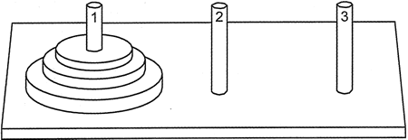
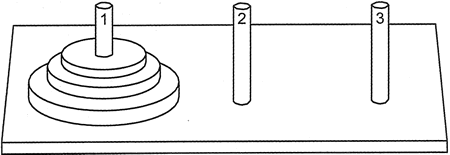

首页 > 编程笔记
C++汉诺塔递归算法完全攻略
汉诺塔是计算机学教科书中常用的游戏，用来说明递归的魔力。该游戏有3个柱子和一组不同大小的圆盘，柱子从圆盘的中心穿过。游戏开始时，所有圆盘叠放在左侧第一个柱子上，如图 1 所示。

图 1 汉诺塔游戏中的柱子和圆盘
游戏的目标是将所有的圆盘从第一个柱子移动到第三个柱子，同时遵守以下规则：
现在来看一看游戏的一些玩法示例。最简单的情况是当只有一个圆盘时：在这种情况下，只要将圆盘从第一个柱子移动到第三个柱子就可以一次性完成游戏。
如果有两个圆盘，则需要通过 3 个步骤解决这个游戏：
请注意，虽然游戏的目的是将圆盘从第一个柱子移动到第三个柱子，但是有必要使用第二个柱子作为一些圆盘的临时安放位置。解决方案的复杂性随着要移动的圆盘数量的增加而迅速增加。移动 3 个圆盘需要 7 步移动，如图 2 所示。

图 2 汉诺塔 3 个圆盘的 7 步解决方案
这个游戏有一个迷人的传说。根据这个传说，河内寺庙里有一群僧侣，他们有 3 个柱子和 64 个圆盘。这些圆盘最初堆放在第一个柱子上，而僧侣们则需要将它们移动到第三个柱子上。当僧侣们完成任务时，世界将会消亡。
现在回到这个问题本身，来考虑当圆盘的数量不做限制时，一般情况下的解决方案。这个问题可以被描述为：将 n 个圆盘从第一个柱子移动到第三个柱子，使用第二个柱子作为临时柱子。
要理解如何使用循环解决这个问题是非常困难的，但令人高兴的是，设想一个递归解决方案并不困难：如果可以（递归地）将 n-1 个圆盘从第一个柱子移动到第二个柱子，而使用第三个柱子作为临时挂钩，那么最大的圆盘将独自放在第一个柱子上。然后就可以一次性把最大圆盘从第一个柱子移动到第三个柱子。接下来，可以（递归地）将 n-1 个圆盘从第二个柱子移动到第三个柱子，这次使用第一个柱子作为临时柱子。
这个计划可以使用伪代码表示如下。其中，disk 表示圆盘，peg1-3 对应第一个柱子-第三个柱子。

图 1 汉诺塔游戏中的柱子和圆盘
游戏的目标是将所有的圆盘从第一个柱子移动到第三个柱子，同时遵守以下规则：
- 除了被移动时，所有圆盘都必须放在柱子上。
- 一次只能移动一个圆盘。
- 圆盘不能放置在比它小的圆盘上面。
现在来看一看游戏的一些玩法示例。最简单的情况是当只有一个圆盘时：在这种情况下，只要将圆盘从第一个柱子移动到第三个柱子就可以一次性完成游戏。
如果有两个圆盘，则需要通过 3 个步骤解决这个游戏：
- 将圆盘从第一个柱子移动到第二个柱子（它必须是最上面的一个)。
- 将圆盘从第一个柱子移动到第三个柱子。
- 将圆盘从第二个柱子移动到第三个柱子。
请注意，虽然游戏的目的是将圆盘从第一个柱子移动到第三个柱子，但是有必要使用第二个柱子作为一些圆盘的临时安放位置。解决方案的复杂性随着要移动的圆盘数量的增加而迅速增加。移动 3 个圆盘需要 7 步移动，如图 2 所示。
图 2 汉诺塔 3 个圆盘的 7 步解决方案
这个游戏有一个迷人的传说。根据这个传说，河内寺庙里有一群僧侣，他们有 3 个柱子和 64 个圆盘。这些圆盘最初堆放在第一个柱子上，而僧侣们则需要将它们移动到第三个柱子上。当僧侣们完成任务时，世界将会消亡。
现在回到这个问题本身，来考虑当圆盘的数量不做限制时，一般情况下的解决方案。这个问题可以被描述为：将 n 个圆盘从第一个柱子移动到第三个柱子，使用第二个柱子作为临时柱子。
要理解如何使用循环解决这个问题是非常困难的，但令人高兴的是，设想一个递归解决方案并不困难：如果可以（递归地）将 n-1 个圆盘从第一个柱子移动到第二个柱子，而使用第三个柱子作为临时挂钩，那么最大的圆盘将独自放在第一个柱子上。然后就可以一次性把最大圆盘从第一个柱子移动到第三个柱子。接下来，可以（递归地）将 n-1 个圆盘从第二个柱子移动到第三个柱子，这次使用第一个柱子作为临时柱子。
这个计划可以使用伪代码表示如下。其中，disk 表示圆盘，peg1-3 对应第一个柱子-第三个柱子。
To move n disks from peg 1 to peg 3, using peg 2 as a temporary peg: If n > 0 Then Move n-1 disks from peg 1 to peg 2, using peg 3 as a temporary peg. Move a disk from peg 1 to peg 3. Move n-1 disks from peg 2 to peg 3, using peg 1 as a temporary peg. End If现在来编写一个实现这个解决方案的函数，打印解决游戏的一系列动作。以下代码将使用名称而不是数字来描述柱子。该函数的目标是使用临时柱子（peg3）将一叠圆盘从源柱子（peg1）移动到目标柱子（peg2）。以下是函数的代码：
void moveDisks(int n, string source, string dest, string temp)
{
if (n > 0)
{
//将n-1圆盘从源柱子移动到临时柱子
//使用目标柱子作为临时柱子
moveDisks(n - 1, source, temp, dest);
//将圆盘从源柱子移动到目标柱子
cout << "Move a disk from " << source << " to " << dest << endl;
//将n-1圆盘从临时柱子移动到目标柱子
//使用源柱子作为临时柱子
moveDisks(n - 1, temp, dest, source);
}
}
基本情况在 n = 0 时发生，并且没有要移动的圆盘。在这种情况下，函数调用将不做任何事情返回。下面的程序演示了该函数。
// This program displays a solution to the towers of Hanoi game.
#include <iostream>
#include <string>
using namespace std;
// Function prototype
void moveDisks(int, string, string, string);
int main()
{
// Play the game with 3 disks
moveDisks (3, "peg 1", "peg 3", "peg 2");
cout << "All the disks have been moved!";
return 0;
}
void
moveDisks(int n, string source, string dest, string temp)
{
if (n > 0)
{
// Move n-1 disks from source to temp
// using dest as the temporary peg
moveDisks(n-1, source, temp, dest);
// Move a disk from source to dest
cout << "Move a disk from " << source << " to " << dest << endl;
// Move n-1 disks from temp to dest
// using.source as the temporary peg
moveDisks(n-1, temp, dest, source);
}
}
程序输出结果：
Move a disk from peg 1 to peg 3
Move a disk from peg 1 to peg 2
Move a disk from peg 3 to peg 2
Move a disk from peg 1 to peg 3
Move a disk from peg 2 to peg 1
Move a disk from peg 2 to peg 3
Move a disk from peg 1 to peg 3
关注公众号「站长严长生」，在手机上阅读所有教程，随时随地都能学习。内含一款搜索神器，免费下载全网书籍和视频。

微信扫码关注公众号